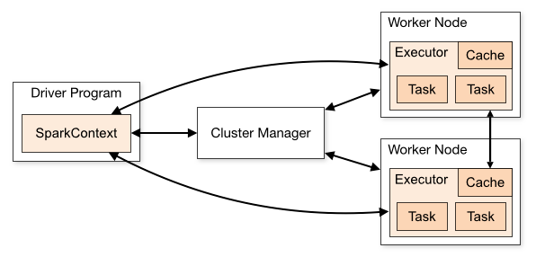

PySpark is the API for Python programming in the Spark environment.
The interactive PySpark shell session can be launched from the command-line:
pyspark
Alternatively, PySpark applications are typically run using $SPARK_HOME/bin/spark-submit. For example:
$SPARK_HOME/bin/spark-submit /path/to/my/program.py
Use of PySpark automatically imports required libraries (no explicit import statement required). For example, SparkContext uses the Py4J library to launch the JVM, creating a JavaSparkContext.
With respect to PySpark, a SparkContext instance named “sc” is automatically created. Therefore, it is useless to try to create a new SparkContext unless you want to change its constructor parameters.
Your Spark context defines how your application's processes run independently across a cluster. This is illustrated as follows (source: at https://spark.apache.org/docs/latest/cluster-overview.html ):

With the initialization of a SparkContext, each worker node starts an executor program which eventually sends information back to to the driver on the master. The driver can be considered a local parent process of the remote executors. When the driver stops so do the executors.
The driver will serialize function objects for tasks on an executor. The executor then deserializes the the function and executes it on a partition of an RDD.
To check the Spark Context of a session, start a PySpark session and enter:
spark.sparkContext.getConf().getAll()
This will return a dictionary of settings. These setting can be changed by providing arguments to the SparkContext constructor. The argument choices are here: https://spark.apache.org/docs/2.3.1/api/java/org/apache/spark/SparkContext.html
The first argument in the SparkContex is the cluster type. This can include:
We could define a single task for a single “local” machine as follows:
sc = SparkContext('local', 'testing...')
Suppose we want to use all cores on a local machine, then we can specify:
sc = SparkContext('local[*]', 'testing...')
RDDs in the context of PySpark:
To distribute data around the disparate machines comprising a cluster, Spark uses a data structure called a Resilient Distributed Dataset or RDD.
RDDs include methods that works with the PySpark API's lambda syntax. A function can be passed to an RDD method, as we saw with the above example with sc.parallelize(grades).map(lambda a: [a, a + 10]).collect().
Unlike with Scala, Python RDDs can hold objects of multiple types. RRD methods can also take functions and return Python collection types.
The Spark API includes Spark Core for basic functionality such as RDDs and related map, reduce and filter operations.
Lets convert our earlier Python example to PySpark we use RDDs instead of Python lists. We now have:
grades = [30, 35, 55, 70, 45, 60]
rdd_grades = sc.parallelize(grades)
rdd_grades_adj = rdd_grades.map(lambda a: a + 10).collect()
print(rdd_grades_adj) → [40, 45, 65, 80, 55, 70]
When dealing with large data sets, the accumulation of output can push local resources. This is a reason to limit some of the collection by using the take() method instead of collect.
rdd_grades_adj = rdd_grades.map(lambda a: a + 10).take(2)
print(rdd_grades_adj) → [40, 45]
For an example of reduce, lets find the average grade.
rdd_grades_avg = rdd_grades.reduce(lambda a, b: a + b)
rdd_grades_avg = rdd_grades.reduce(lambda a, b: a + b)/rdd_grades.count()
print(rdd\_grades\_avg) → 49
Repeat the Python exercises in the Functional Programming section using PySpark.
Submit your code and output from executing your program.
Redundancies such as RDD duplication in memory and storage to disk (serialization).
Serialization is useful for data transmission as well as storage and can speed up operations.
Serialization can be accommodated by file format such as XML, JSON or binary (really Java byte code for Spark).
PySpark has a variety of serializers, including:
More here: https://spark.apache.org/docs/2.3.1/api/python/_modules/pyspark/serializers.html
Seven RDD storage levels are outline here:
https://spark.apache.org/docs/latest/rdd-programming-guide.html#rdd-persistence
For example, lets serialize an RDD for storage to both memory and disk:
a.persist(pyspark.StorageLevel.MEMORY_AND_DISK_SER)
Verify that storage:
print(a.getStorageLevel()) → Disk Memory Serialized 1x Replicated
Another example (If within the pyspark interactive shell, first stop the prior Spark Context):
sc.stop()
from pyspark.serializers import PickleSerializer
sc = SparkContext("local", "serialization app", serializer = PickleSerializer())
print(sc.parallelize(list(range(1000))).map(lambda a: a * 2).take(10))
sc.stop()
Types of variables that are shared across nodes:
Accumulator – stores of updated aggregated value.
Broadcast – sent to all nodes where they are cached.
In the following example, the variable 'a' is an accumulator, as it is modified such that a = a + b.
ints = [2, 4, 6, 8]
sum = lambda a, b: a + b
avg = reduce(sum, ints)/len(ints)
print(avg) → 20
Example broadcast:
more_animals = sc.broadcast([("rooster", 1), ("ox", 2), ("horse", 5)])
Now verify oxen in new set:
animal = more_animals.value[1]
print ("Oxen? ... %s", animal) → ('Oxen? ... %s', ('ox', 2))
Devise an algorithm that Create an RDD_alpa1 consisting of the letters of the alphabet. Serialize the RDD to disk using CompressedSerializer. Devise a second algorithm that create RDD_alpha2 from the serialized RDD_alpa1 that is on disk. Write test code that validates the two RDDs are the same.
Upload your code and test output.